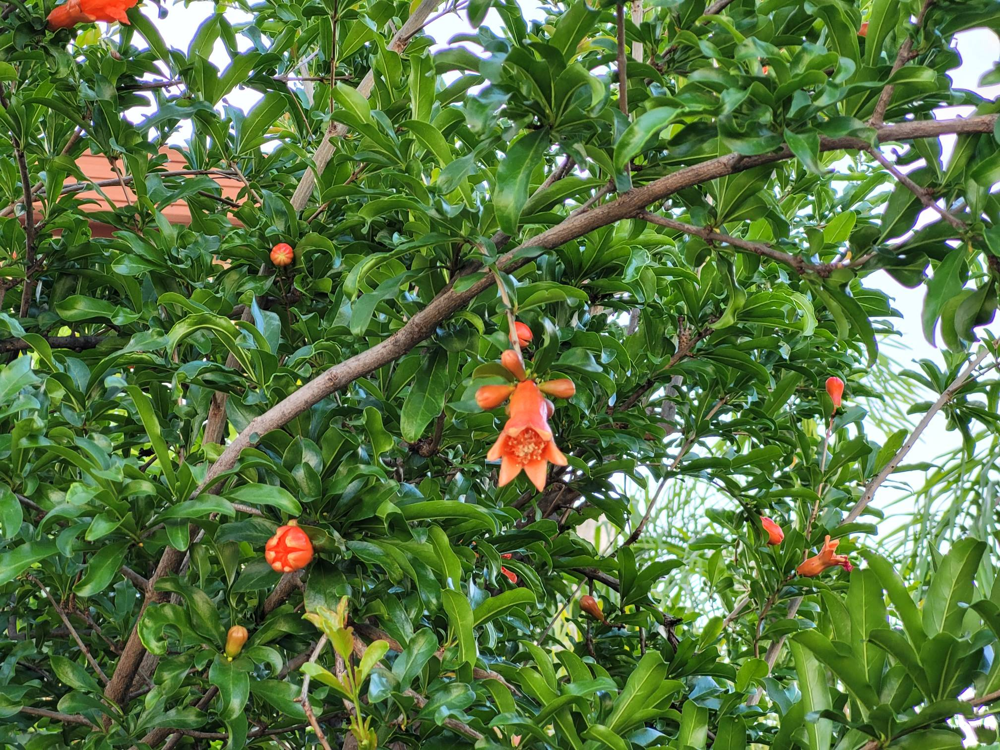
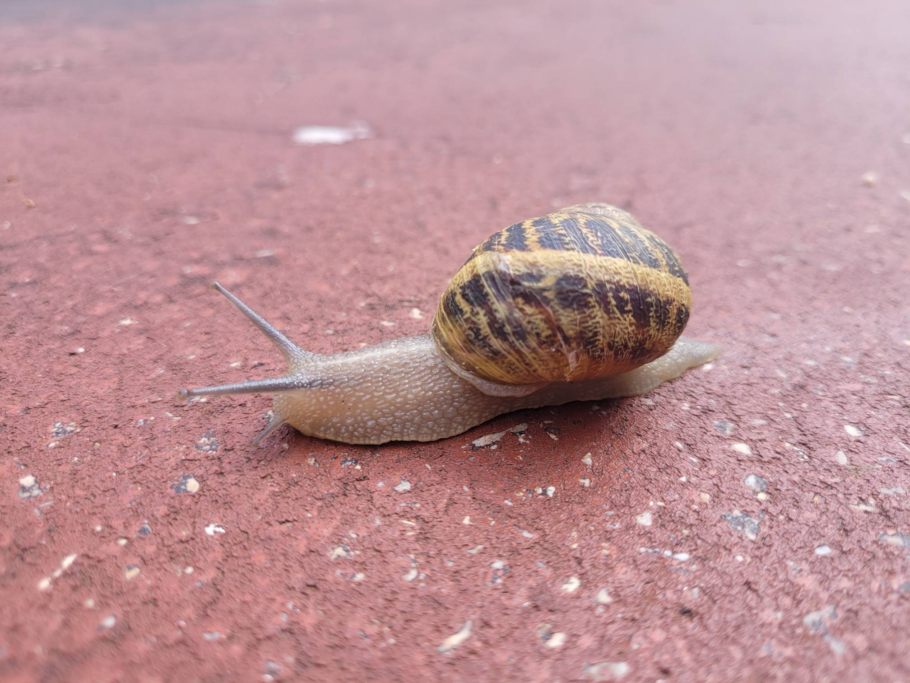
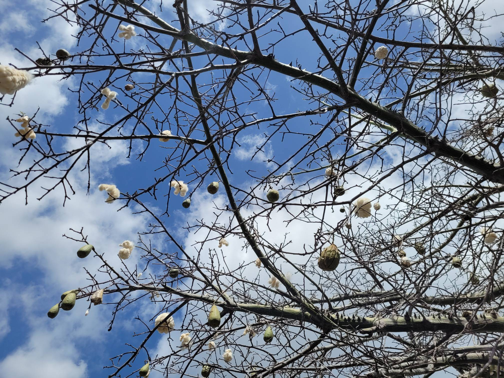
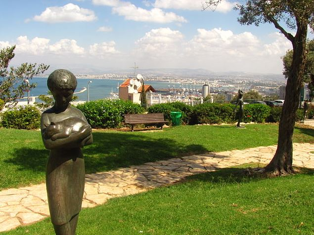
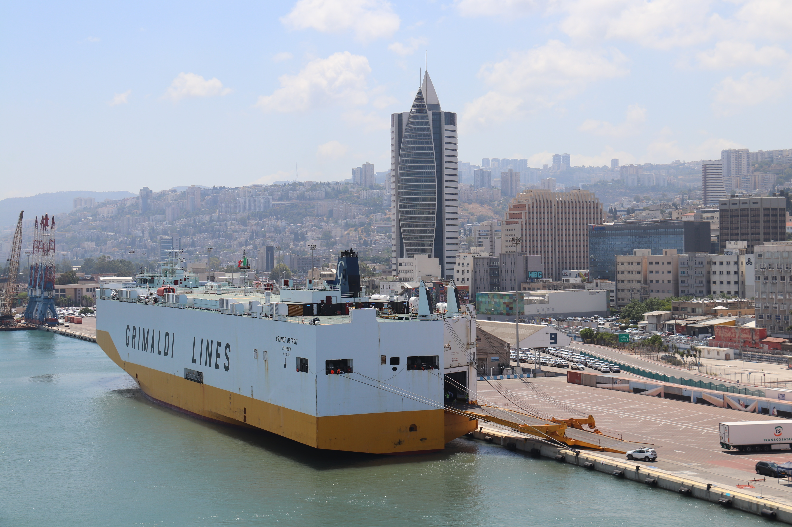

Хайфа - столица севера
Хайфа — это прекрасный город, расположенный на побережье Средиземного моря в Израиле. Этот многокультурный город является важным экономическим, культурным и транспортным центром страны.
Географически, Хайфа находится на севере Израиля, что делает его важным морским портом и транспортным узлом для региона. Город также славится своими красивыми пейзажами, включая зеленые холмы, средиземноморские пляжи и великолепные виды на залив Хайфа.
На протяжении своей богатой истории, Хайфа была домом для различных культур и религий, что делает ее культурным и религиозным центром. Население города многонационально и многоязычно, что создает уникальную атмосферу в городе.
Хайфа также славится своими учебными и исследовательскими учреждениями, включая Университет Техниона и другие высшие учебные заведения.
Этот город сочетает в себе богатую историю, современные достижения и красивую природу, что делает его привлекательным местом для жизни и посещения в Израиле.
Природа и парки
-

-

-

-

-

-

-

- 
- 
- 
-

Парки
-
Зоопарк
Хайфский зоопарк - это удивительное место, расположенное на склонах горы Кармель. Здесь обитает разнообразная дикая природа, включая экзотических животных и птиц. Посещение зоопарка предоставляет уникальную возможность увидеть и узнать о разнообразии животных со всего мира. Здесь вы найдете интересные образовательные программы и моменты наблюдения за животными, проявляющими свое естественное поведение. Хайфский зоопарк, также служит важным центром для сохранения и исследования, способствуя сохранению уязвимых видов и их образа жизни в дикой природе.
Адрес: Ha-Tishbi St 124, Haifa
-
Национальный парк Кармель
Национальный парк Кармель - это волшебный природный заповедник, расположенный на склонах живописной горы Кармель на севере Израиля. Этот парк известен своей разнообразной флорой и фауной, включая дикие горные растения и уникальные виды птиц. Парк предлагает множество пешеходных и велосипедных троп, предоставляя посетителям замечательную возможность наслаждаться живописными пейзажами и природными чудесами. Кармель также является важной археологической зоной, где были обнаружены древние следы деятельности человека. Посещение этого парка приносит радость от природы, приключений и возможности исследовать историю и культуру региона.
Адрес: Гора Кармель

-

Сад скульптур
Сад скульптур, также известный как Ган Хапсалим на иврите, - это очаровательный парк, расположенный в Хайфе. Этот уникальный городской оазис предлагает выдающуюся коллекцию современных скульптур, созданных местными и международными художниками. Посетители могут исследовать открытое художественное пространство, прогуливаться среди пышной зелени и наслаждаться сочетанием искусства и природы. Сад скульптур предлагает умиротворенный убежище от городской суеты, что делает его идеальным местом для спокойной прогулки, художественного вдохновения или умиротворенного отдыха. С динамичным дисплеем скульптур этот парк добавляет культурный и творческий акцент к красивому городскому пейзажу Хайфы.
Адрес: Sderot Hatsiyonut & Shnayim Be'NovemberHaifa, Haifa
-
Маленькая Швейцария
"Маленькая Швейцария" в Хайфе - уникальное природное место, известное своей живописной красотой и возможностями для активного отдыха. Этот природный заповедник предлагает посетителям множество пешеходных троп, ведущих через живописные леса и холмы. Высоко расположенные точки в парке предоставляют захватывающие виды на город Хайфу и Средиземное море. "Маленькая Швейцария" также отличное место для пикников и семейных прогулок, позволяя вам наслаждаться природой и активным отдыхом среди потрясающей природной красоты и атмосферы.
Адрес: Гора Кармель

- Посмотреть больше →
Транспорт
Хайфа предоставляет разнообразные варианты транспорта для удобства жителей и посетителей города. Транспорт включает в себя автобусы, охватывающие всю территорию города, а также поезда и канатную дорогу, соединяющие разные части города и его пригороды. Город также может похвастаться разветвленной сетью дорог и мостов, облегчающих автомобильное движение. Кроме того, порт Хайфа служит важным центром морского транспорта в регионе, соединяясь с многими другими портами Средиземного моря.
-
Кармелит
Кармелит - это подземная линия транспорта, обеспечивающая городской транспорт в городе. Часто Кармелит ошибочно называют метро, но принцип действия Кармелита - фуникулер. На линии Кармелит 6 станций. Длина её трассы составляет 2 км, включая станции, или 1 км 803 м без учёта станций.
Перейти на вебсайт → -
Канатная дорога Хайфы (Ракавлит)
Ракавлит входит в систему общественного транспорта, канатная дорога протяженностью 4,4 км и перепадом высот между конечными станциями около 460 м, предоставляет уникальную возможность наслаждаться захватывающими видами на Хайфу и Средиземное море с высоты птичьего полета.
Перейти на вебсайт → -
Поезд (Ракевет)
"Ракевет" - входит в систему общественного транспорта Израиля. На Ракевете можно перемещаться по всему Израилю, что помогает жителям перемещаться без затруднений. На территории Хайфы расположено 7 станций.
Перейти на вебсайт → -

Корабли
Из Хайфы вы можете отправиться в морское путешествие, маленькие паромы предлагают живописный способ перемещения между Хайфой и Акко. Более крупные суда доставят вас в соседние страны.
Перейти на вебсайт → -
Канатная дорога
Туристическая канатная дорога построена в 1986 году. По три вагончика в каждую сторону курсируют снизу вверх, на протяжении 355 метров, с разницей высот в 130 метров.
Перейти на вебсайт → -
Метронит
"Метронит" - это интегрированная система общественного транспорта в Хайфе и ее пригородах. Это скоростной автобус, который едет по выделенной полосе, что позволяет даже в самое загруженное время перемещаться по дорогам быстро.
Перейти на вебсайт →
Хайфа предлагает богатый набор вариантов развлечений для всех возрастов и интересов. Вы можете исследовать культурные богатства города, посещая музеи, художественные галереи и исторические памятники, такие как Сады Бахай. Для тех, кто предпочитает активный образ жизни, здесь есть красивые пляжи и живописные парки для прогулок и пикников. Любители гастрономии найдут множество ресторанов, предлагающих разнообразные кулинарные удовольствия. Ночная жизнь здесь оживлена барами, клубами и концертами, обеспечивая веселый вечер.
Музеи и достопримечательности
-
Мадатек
Музей Madatech известен интерактивными экспонатами, демонстрирующими различные аспекты науки и техники.
Музей приглашает посетителей в увлекательное путешествие в мир технических инноваций, научных открытий и истории технологий. Здесь вы можете исследовать интерактивные демонстрации, выставки и экспериментальные установки, которые предоставляют более глубокое понимание принципов и применения науки и техники.
Мадатек также организует образовательные мероприятия и программы, приглашая посетителей, особенно молодежь, узнать больше о мире науки и техники.
Этот музей является важным центром для изучения и понимания технологических достижений и их влияния на современный мир.
Вебсайт → -
Музей железнодорожного транспорта
Музей железнодорожного транспорта в Хайфе предлагает захватывающее путешествие в историю и развитие железнодорожных систем. Расположенный в культурном центре Израиля, этот музей раскрывает богатую историю железнодорожного транспорта в регионе. Посетители могут исследовать разнообразные экспонаты, включая старинные локомотивы и вагоны, узнавая о важной роли, которую железные дороги сыграли в инфраструктуре и развитии Израиля. Кроме того, в музее представлены интерактивные элементы и образовательные программы, что делает его увлекательным и информативным местом для посетителей любого возраста.
Вебсайт → -

Бахайские сады
Сады Бахаи, также известные как Террасы Бахаи или Бахаи-сады Хайфы, - это уникальное место в Хайфе, привлекающее туристов и обладающее духовным значением для последователей Бахаи. Эти сады состоят из нескольких террас, расположенных на склонах горы Кармель и предоставляющих захватывающие виды на город Хайфу и Средиземное море. Среди заметных архитектурных и духовных особенностей садов следует отметить Бахаи Шрайн, который открыт для посетителей. Это святое место служит фокусным пунктом для бахаистского поклонения и медитации.
Сады Бахаи - это не только значимая религиозная постройка, но и одна из самых красивых туристических достопримечательностей Израиля, идеально сочетающая в себе природную красоту с духовным значением.
Вебсайт → - Посмотреть больше →